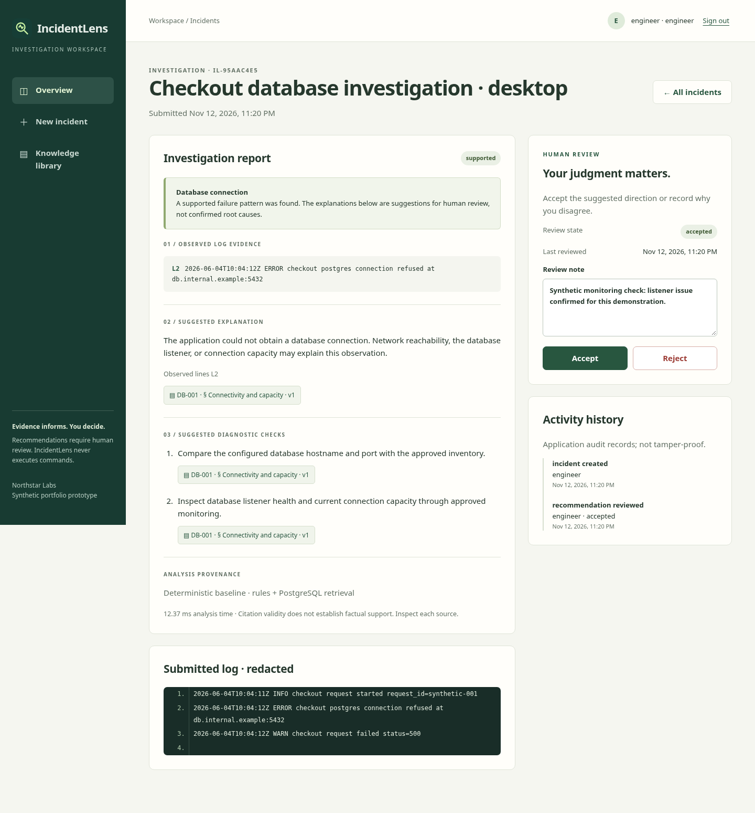
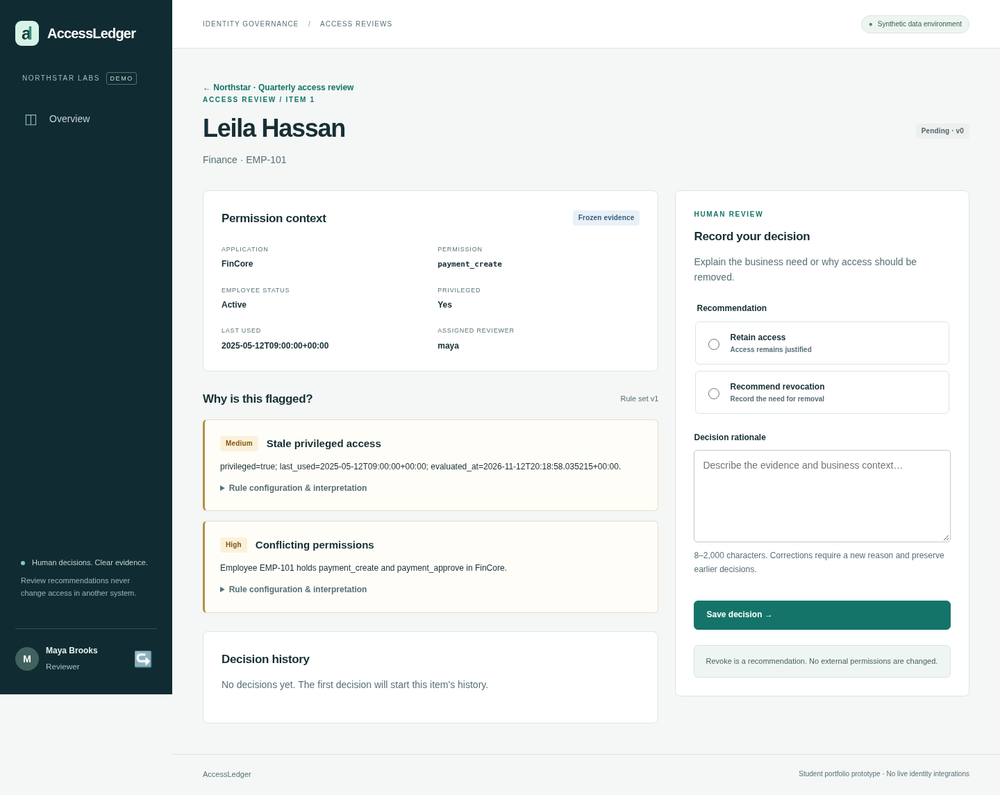
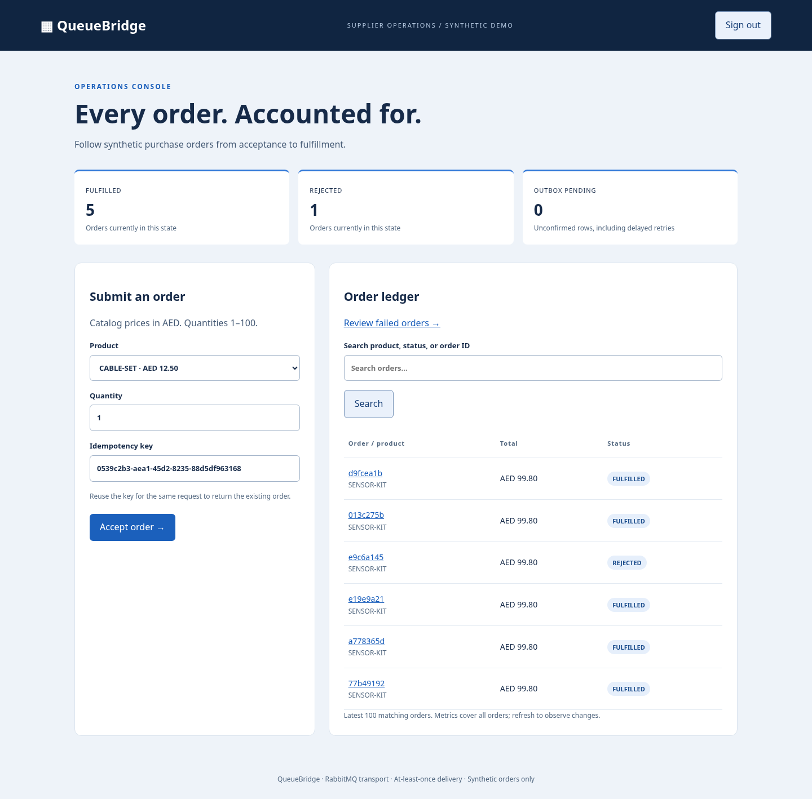

SOFTWARE ENGINEERINGARTIFICIAL INTELLIGENCECLOUD COMPUTING
01 / A little about me
Curiosity drives me.
Building teaches me.
EducationCanadian University Dubai
FocusComputer Science
I’m Mohamed, a Computer Science student at Canadian University Dubai, building toward a career in software engineering.
I want to create software that solves useful problems and is clear enough for other people to understand, test, and maintain. My projects explore backend systems, data workflows, and interfaces that make complex decisions easier to inspect.
Along the way, I’m strengthening my programming fundamentals, data structures, and algorithms — with a growing interest in artificial intelligence and cloud computing.
02 / Selected projects
Ideas, put into practice.

Project 01 / Student work
IncidentLens
From log failures to inspectable evidence.
Investigate synthetic application logs with permission-filtered runbook retrieval, source citations, and human review. A deterministic baseline makes the investigation process visible and reproducible.
PythonFastAPIPostgreSQLJavaScript
Explore the project ↗
Project 02 / Student work
AccessLedger
Every permission. Accounted for.
Review fictional employee access with explainable findings, frozen campaign evidence, and assigned reviewer decisions. Version checks protect against stale updates; audit events preserve decision history.
PythonFastAPISQLAlchemyJinja2
Explore the project ↗
Project 03 / Student work
QueueBridge
Follow the journey. Understand the recovery.
Explore asynchronous order processing with transactional outbox records, duplicate-delivery handling, delayed retries, and administrator replay. Built as a local learning project with synthetic orders.
Java 21Spring BootPostgreSQLRabbitMQ
Explore the project ↗These are learning projects using synthetic data. See each repository for setup, verification records, and implementation limits.
03 / Technical toolkit
The tools behind the work.
</>Languages & web
Programming foundations and responsive interfaces, from academic exercises to working applications.
PythonJavaC++JavaScriptHTML / CSS
{ }Backend & data
APIs, relational data, explicit migrations, and workflows designed around clear system boundaries.
FastAPIPostgreSQLSQLAlchemyAlembicSpring Boot
⌘Development & verification
Reproducible local environments, version control, and checks that exercise meaningful behavior.
GitDocker ComposeLinux / BashpytestPlaywrightGitHub Actions
04 / Where I’m heading
Always a student.
Always moving forward.
I’m connecting my Computer Science foundations to practical software, with clear design decisions, useful documentation, and reproducible checks.
Strengthening the fundamentals
Continuing my studies in programming, data structures, and algorithms at Canadian University Dubai.
Building practical systems
Learning through backend applications, evidence-based workflows, and asynchronous processing.
Exploring what’s next
Developing my understanding of AI and cloud computing as longer-term areas of interest.